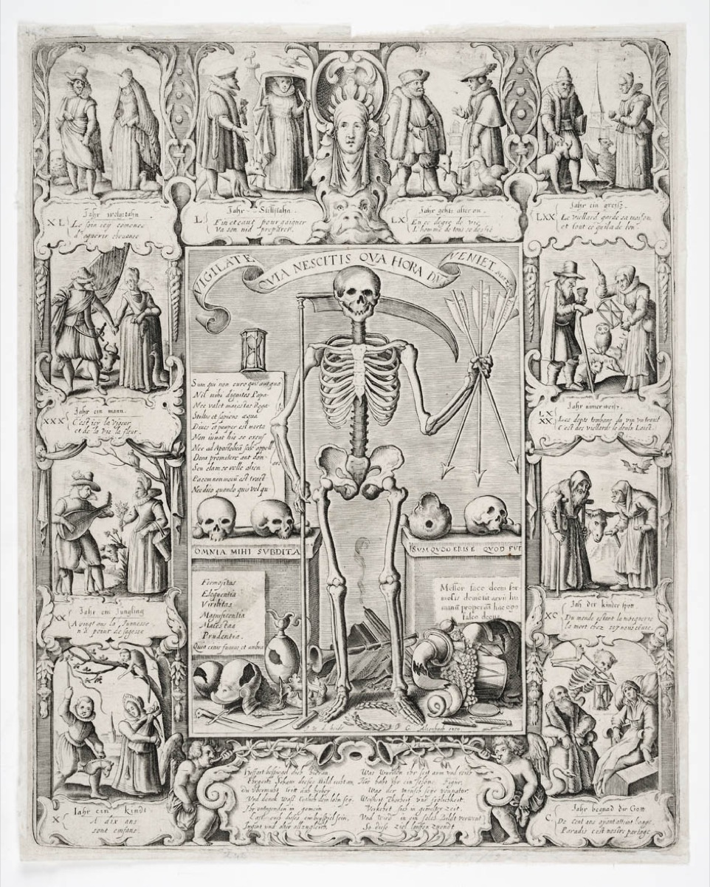
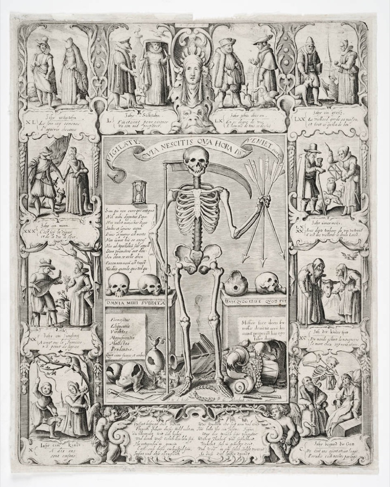

Présentation
Associé au sentiment de la peur de la mort, le sujet macabre a accompagné l’histoire des arts graphiques depuis la fin du XVe siècle. Il a connu des développements particuliers dans la vallée rhénane, inspiré par les modèles primitifs des fresques des dominicains de Bâle et de Strasbourg, et porté par le succès de l’imprimerie. Partant d’une vocation moralisatrice, qui, selon la formule « Memento Mori », devait rappeler aux mortels leur sort inéluctable, le sujet macabre a pu faire l’objet d’une interprétation plus politique au moment de la Révolution de 1848 et des guerres franco-allemandes. Mais il a également été traversé par une veine comique associée à la volonté de conjurer ou d’expier la mort et a fait l’objet de nombreuses déclinaisons dans la culture populaire.
Cette exposition, basée sur les collections des musées strasbourgeois augmentées d’emprunts significatifs, propose de décliner les variantes iconographiques de ce genre qu’on a pu appeler « Danses macabres » depuis ses formes primitives jusqu’aux crises et conflits ayant ponctué le XXe siècle. Elle réunit les noms de ses principaux représentants depuis les Maîtres de l’histoire de la gravure Hans Holbein, Albrecht Dürer, Heinrich Aldegrever, Hans Sebald Beham jusqu’aux grands noms associés aux arts graphiques des XIXe et XXe siècles : Alfred Rethel, Alfred Kubin, Joseph Sattler, George Grosz, Otto Dix, et, plus près de nous, Tomi Ungerer.

Holbein et la postérité
La série des « Images de la mort » de Hans Holbein le Jeune, achevée vers 1526, et éditée à Lyon en 1538, a engendré une postérité nombreuse, en particulier aux xixe et xxe siècles. Ces illustrations s’inscrivent dans la tradition des danses macabres médiévales, notamment par le fait que certains squelettes y jouent d’un instrument.
Holbein développe de virulentes critiques anticléricales, en dénonçant également la corruption et l’avarice de certains membres du patriciat urbain (marchand, conseiller, juge, etc.), la noblesse n’étant guère mieux traitée, alors que la Mort est un peu plus indulgente pour les pauvres et les vieux. Réinterprétée par Heinrich Aldegrever en 1541, la série est reprise par Matthäus Merian en 1621, et compte depuis d’innombrables rééditions comme dans l’imagerie populaire de Wentzel à Wissembourg jusqu’à celle, toute récente et joyeusement iconoclaste, de Marcel Ruijters, toujours sous le nom de Totentanz, remontant ainsi aux sources.
Strasbourg et l’illustration macabre
La Mort est une figure récurrente dans les productions strasbourgeoises des vingt premières années du xvie siècle, notamment dans les éditions des sermons du célèbre prédicateur Geiler de Kaysersberg. Généralement figurée en squelette, elle y dialogue avec les hommes de toutes conditions dans une perspective moralisatrice.
Mais c’est surtout dans les publications de l’imprimeur le plus prolifique des années 1500-1520, Johannes Grüninger, qu’on rencontre le plus d’occurrences de la Mort. Cette dernière apparaît alors dans des situations de la vie quotidienne, un mourant consolé par des proches, alors que la fossoyeuse tenant une pelle à la main annonce sa venue. À partir des années 1520, à Strasbourg comme dans les autres villes libres allemandes et suisses acquises à la Réforme, la thématique macabre semble se tarir presque entièrement dans l’illustration de livres, la grande exception étant constituée par « Les Images de la mort » de Hans Holbein.


La Mort dans les Fables de La Fontaine
En 1668 paraît le premier recueil des Fables de Jean de la Fontaine, qui transpose la tradition satirique antique en une forme de récit humoristique. Outre les vices et les vertus, l’auteur y traite de la condition mortelle de l’homme. Dans La Mort et le Bûcheron comme dans La Mort et le Malheureux, on retrouve la même trame : harassés par la peine, les deux protagonistes finissent par faire appel à la Mort mais se ravisent, saisis d’effroi, quand celle-ci se présente à eux.
Nombre d’illustrateurs ont mis ces textes en images, leurs représentations se concentrant le plus souvent sur le moment du surgissement de la Mort. Étienne Fessard propose une représentation chargée de pathos dans laquelle la Mort, figurée avec des ailes, descend du ciel en brandissant sa faux. Grandville souligne avant tout l’humour noir de la fable, tandis que Gustave Doré lui donne un tour dramatique : la faucheuse est figurée à contre-jour tel un spectre, dans une clairière à l’arrière-plan.


La Jeune Fille et la Mort
Le thème de la Jeune Fille et la Mort apparaît au début du xvie siècle dans la sphère germanique et particulièrement dans le Rhin Supérieur, et à Nuremberg. La confrontation de la jeunesse et de la beauté avec la figure funeste introduit une dialectique entre Eros et Thanatos, dont la tension érotique est renforcée encore par l’usage de la langue allemande dans laquelle le mot « mort » est masculin.
Les artistes ne se contentent pas de montrer la jeune femme sur le point de succomber, mais mettent en exergue les rapports complexes d’attraction-répulsion entre le « beau sexe », symbole de la vie, et la Mort masculine. Les deux gravures de Hans Sebald Beham tout comme le dessin de Tomi Ungerer mettent en scène une femme entièrement nue, suscitant un certain voyeurisme pimenté par la présence de la Mort. Plus rarement, une Mort songeuse accompagne une jeune femme révoltée ou éplorée comme dans les oeuvres d’Alfred Kubin et Edmond Bille.


Au détour du chemin
Si dans sa forme primitive, la danse macabre représente un macchabée, éventuellement dans un cimetière, le thème se transforme rapidement en une représentation symbolique de la Mort imprévisible prête à frapper n’importe qui et à tout moment.
La vie est dès lors considérée comme un chemin, dessinant une ligne plus ou moins droite, dont l’issue est prévisible. Cette symbolique universelle devient un aspect récurrent de la représentation de la Mort, toujours présente au bout du parcours, que l’on soit à pied, à cheval ou en voiture.
Chez Albrecht Dürer, la figure funeste, montée sur un cheval fourbu, agite son sablier pour interpeller le chevalier. Indifférente aux évolutions technologiques et aux développements de la période industrielle, elle s’adapte à toutes les situations et intègre les nouveaux modes de déplacement. Ainsi, chez Joseph Sattler, on aperçoit, presque complice, la Mort cachée derrière un arbre sur le point de surprendre une voiture lancée à vive allure à l’arrière-plan.


Derniers instants
Si la Mort peut frapper chacun de nous à tout moment, les personnes âgées ou malades sont néanmoins particulièrement menacées et susceptibles de vivre leurs derniers instants. Les artistes retiennent tout naturellement le motif du mourant attendant son heure. La figuration de cet instant tragique n’est pas forcément empreinte de tension ou de violence et peut au contraire laisser transparaître une certaine sérénité.
C’est le cas dans la gravure Der Tod als Freund (La Mort amie) d’Alfred Rethel, datée de 1851, qui nous présente une relation apaisée et calme entre un vieil homme, venant de s’éteindre assis dans sa chaise, et la Mort, sonnant le glas.
Plus rarement, et bien que le sujet soit longtemps demeuré tabou, la Mort peut prêter assistance au suicidé, comme c’est le cas dans le dessin d’Oskar Nerlinger. La relation entre le malade/mourant, le médecin et la Mort au moment du trépas est également un moment complexe que les artistes se sont plu à décrire.

 

La danse des morts
Le début du xve siècle est une période décisive pour la déclinaison des grands cycles macabres peints et leur réception. À l’origine, les fresques représentent des morts sortis de leurs tombes et entraînant les vivants dans une grande ronde.
Parmi les exemples gravés, les bois de Guyot Marchant éditées à Paris en 1486 paraissent former le premier grand cycle diffusé. Réalisées d’après l’ensemble des Innocents à Paris, ces gravures ont connu de nombreuses rééditions, comme celle réalisée en 1728 par Jean- Antoine Garnier. La Chronique de Hartmann Schedel traite le thème de façon plus grinçante et drôle. Publié à Nuremberg en 1493, cet ouvrage est l’un des plus célèbres incunables et a également connu de nombreuses rééditions.
Ces squelettes dansants ont suscité une véritable tradition iconographique, exerçant une fascination sur plusieurs générations d’artistes. Ils ont servi de modèles aux scènes de danses sauvages d’Emil Nolde, ou, plus près de nous, aux sarabandes désarticulées de Daniel Depoutot.


Parodies et détournements
Au xixe siècle, la tradition graphique macabre rencontre les genres satiriques développés dans l’illustration et le dessin de presse. Parmi les premiers, Grandville a traité de la Mort sur un mode humoristique et grinçant. Dans son cycle Voyage pour l’éternité, elle est costumée de diverses manières, surprenant les hommes dans leur vie quotidienne pour les abuser ou trahir leurs faiblesses. Se référant à Holbein, il s’attache particulièrement à figurer les ecclésiastiques dans des situations compromettantes. Plus tard, ce seront Félicien Rops ou Charles Léandre qui déclineront encore ce sujet pour prêter à la raillerie. Après la Première Guerre mondiale, le genre grotesque a pu servir d’exutoire à la violence traumatique du conflit. Walter Draesner figure à sa suite une mort comique venant dénoncer les travers des vivants dans la tradition moraliste. Melchior Grossek fait plus directement référence au conflit et se livre à une condamnation de la guerre.


_mb.jpg)
Le fantastique
Au xixe siècle, lorsque les thèmes macabres sont redécouverts à la faveur d’un renouveau médiéval, les artistes s’éloignent du prosaïsme originel pour suivre les voies de l’imaginaire. Revue au prisme du romantisme, puis du symbolisme, la danse macabre mêle désormais au funeste tantôt la fécondité de la nature, comme chez Eugen Neureuther, tantôt la vitalité et la complexité de l’esprit créateur, chez Rodolphe Bresdin.
Avec Amor, Tod und Jenseits, Max Klinger offre à son tour un spectaculaire condensé de l’existence humaine, associant dans une folle chevauchée un Cupidon archer et mono-cycliste à la Mort montée sur une créature chimérique. Gustave Doré présente un face-à-face entre vie et trépas dans nombre de ses oeuvres, mais sur un mode résolument allégorique. En liant fantastique et macabre, tous ces artistes semblent ainsi s’essayer à découvrir des chemins de traverse, échappatoires rêvées ou nécessaires exutoires face à un sort implacable.


L’inspiratrice funeste
La Mort personnifiée a souvent été associée à quelque figure de notable, de dirigeant politique ou de guerrier, se faisant la conseillère des puissants. Dans ce cas il s’agit moins d’une injonction morale individuelle que d’un appel à la conscience collective. On retrouve ce thème à diverses époques : le graveur strasbourgeois Friedrich Brentel le rattache à la guerre de Trente Ans, tandis que Théophile Schuler ou Alfred Rethel l’associent aux épisodes révolutionnaires de 1848. Ce dernier reprend le genre macabre pour dénoncer la Révolution en l’associant à la figure cadavérique du tentateur conduisant le peuple à sa perte. Le sujet de la Mort inspiratrice a encore été décliné au tournant du siècle, notamment par des artistes cherchant à réhabiliter un imaginaire médiéval et renaissant comme le strasbourgeois Léo Schnug. Lors de la Première Guerre mondiale, le dessin de presse s’est encore emparé de cette figure pour l’associer aux personnalités de Poincaré ou de Guillaume II.


Allégories de la guerre
Réapparu au milieu du xixe siècle à la faveur du développement du dessin de presse, le sujet macabre a connu une réactualisation spectaculaire avec les guerres franco-allemandes de 1870 et de 1914-1918. Si la figure de la faucheuses est le plus souvent associée à l’ennemi, ainsi rendu responsable du conflit, elle est quelquefois utilisée pour désigner plus largement la guerre elle-même.
Ainsi Wilhelm Scholz, l’illustrateur de la revue satirique Kladderadatsch, réemploie la métaphore du convoi funéraire pour attribuer la responsabilité du conflit à la France, représentée par Napoléon III. Honoré Daumier utilise le même motif, mais lui donne au contraire une portée universelle : c’est la Mort inspiratrice de la guerre qui conduit l’humanité au désastre. Lors du premier conflit mondial, cette imagerie est encore réemployée. Emil Possner représente la Mort comme une figure démesurée enjambant un champ de bataille, tandis que Joseph Sattler la montre consternée, agenouillée le long de la ligne de front.


Catastrophes et fléaux
L’apparition du thème de la danse macabre est intimement liée aux épidémies, famines et guerres qui sévissent à travers l’Europe, suscitant des représentations apocalyptiques. La plus célèbre est celle d’Albrecht Dürer qui représente les quatre cavaliers incarnant la peste, la guerre, la faim et la mort. Cette gravure a servi de modèle à de nombreux artistes jusqu’à George Grosz qui y fait référence pour décrire le chaos de la République de Weimar.
D’autres artistes ont personnifié les épidémies en les associant à la figure allégorique de la Mort. C’est le cas d’Alfred Rethel illustrant un récit de Heinrich Heine dans lequel le Choléra surgit à l’occasion d’un bal mondain. Joseph Sattler évoque à son tour les épidémies de peste, typhus et choléra qui frappent l’Europe. Enfin, les crises sociales, suscitant leur lot de misère et de désolation, ont pu appeler également la référence macabre. Charles Jacque ou Käthe Kollwitz ont développé ce registre en représentant la Mort arrachant des enfants à leurs parents.


« Debout les morts ! »
En 1917, l’artiste belge Frans Masereel, alors réfugié en Suisse, entreprend de représenter la guerre à travers une série de neuf gravures sur bois dont le titre reprend l’injonction des officiers du front : Debout les morts. Inédit par sa violence, le premier conflit mondial a donné lieu à une réapparition du genre macabre et une référence à certains procédés graphiques employés par Hans Holbein, Jacques Callot, Francisco de Goya ou Alfred Rethel.
En Allemagne, les images de morts et de mutilés commencent rapidement à apparaître dans certaines publications liées à l’expressionnisme et aux sécessions. Mais ce n’est que bien plus tard qu’elles s’exprimeront dans toute leur radicalité. L’oeuvre que l’on identifie le plus certainement au conflit est la célèbre série des cinquante eaux-fortes d’Otto Dix, Der Krieg, publiée en 1924. Entre les corps fantomatiques relevés de terre, les ruines et les portraits de mutilés, une planche intitulée Totentanz Anno 17 fait directement référence à la tradition macabre.


Le spectre du fascisme
Dans l’entre-deux-guerres, les intentions criminelles des militants nazis ont inspiré à leurs opposants une nouvelle mobilisation du répertoire macabre. Prenant Daumier pour modèle, John Heartfield élabore un langage graphique d’une grande efficacité et fait de la photographie une arme de combat contre l’obscurantisme. Dans plusieurs photomontages, il emploie l’allégorie de la Mort pour dénoncer les projets funestes des revanchards nationalistes ou des partisans de Hitler. George Grosz et Frans Masereel ont désigné la menace fasciste avec les mêmes moyens, mais en demeurant fidèles à la tradition du dessin de presse.

Crédits
Ville de Strasbourg
Maire de Strasbourg, Roland Ries
Président de l'Eurométropole de Strasbourg, Robert Herrmann
Premier Adjoint au maire en charge de la culture et du patrimoine, Alain Fontanel
Direction des Musées de la Ville de Strasbourg
Joëlle Pijaudier-Cabot, assistée de Camille Giertler
Administration
Émilie Pouzet-Robert et son équipe
Exposition
Commissariat
Franck Knoery et Florian Siffer
Médiation
Maguy Pfenninger, Alice Burg, Marie Ollier
Edition
Lize Braat, Delphine Egron et Giorgia Passaro
Communication
Anne Bocourt, Julie Barth, Cyril Bourgogne, Cathy Letard, Murielle Waroquier
Auditorium
Catherine Hubert, Liliana Orlowska
Scénographie et menuiserie
Pascal Henninger et les ateliers des musées
Montage
Equipe technique des musées sous la responsabilité de Daniel Del Degan et Xavier Clauss
Encadrement
Arnaud Umecker, Eric Catel
Graphisme et signalétique
Rebeka Aginako et Philippe Queney
Traduction
Caroline Gutberlet (vers l’Allemand), Graham Holdup (vers l’Anglais)
Surveillance et sécurité
Emmanuel Decoupigny, l’équipe des agents d’accueil sous la responsabilité de Claude Ketterlé, Marie-Thérèse Refoufi
Stagiaires
Joëlle Reichenbach, Agnès Guglielmi
Partenaires
Cinéma Star, Haute École des Arts du Rhin, Médiathèque André Malraux
Conception et developpement du site web
Antoine Langé